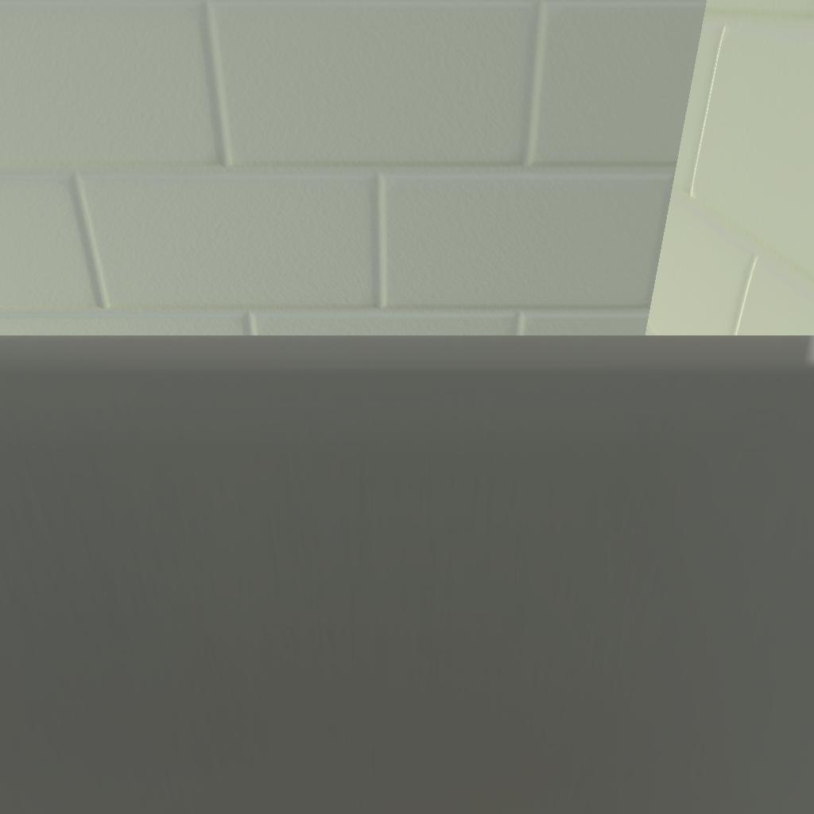

---------------------------------------------------------task: 8---------------------------------------------------------
--------------------------------------------------------------------------------------------------------------------------------------------------------------------
--------------------------------------------------------------------------------------------------------------------------------------------------------------------
Step:--------------------------------------------------------------------------15-------------------------------------------------------------------------------
----------------------------------------
VLM Prompt:
**Task**
Please perform as an embodied AI agent. Our final objective is to put a laptop in desk. Below is the plan for completing the task, the current observation, alongside historical data and admissible actions for the next step. Please determine the best action for the next step!
**Plan**
Below is a detailed step-by-step plan to complete the task.
1. Find a laptop.
2. Pick up the laptop.
3. Find a desk.
4. Place the picked-up laptop on the desk.
**Current Observation**
Displayed is an image capturing the current position of the agent.
Objects in The Image: ['wall', 'ceiling', 'cabinet']
**History Information**
Displayed are the previous observations with their corresponding actions.
State 0:
No history.
State 1:
1. Step Index in the Plan: 1
2. Objects: Mirror, Door, Light Switch, Trash Can, Carpet, Table, Magazine, CD
3. Action: go to desk 1
State 2:
1. Step Index in the Plan: 1
2. Objects: Desk, Alarm Clock, Pencils, Smartphone
3. Action: go to drawer 1
State 3:
1. Step Index in the Plan: 1
2. Objects: Bed, Plush Panda, Nightstand, CD, Book
3. Action: open drawer 1
State 4:
1. Step Index in the Plan: 2
2. Objects: Mirror, Nightstand, CD, Blue Book
3. Action: go to drawer 4
State 5:
1. Step Index in the Plan: 2
2. Objects: Desk, Chair, Table Lamp, Clock, Smartphone, Pen, Air Conditioner, Trash Can, Window
3. Action: open drawer 4
State 6:
1. Step Index in the Plan: 2
2. Objects: Desk, Lamp, Clock, Pen, Ruler, Smartphone, Open Drawer (no laptop visible)
3. Action: close drawer 4
State 7:
1. Step Index in the Plan: 1
2. Objects: Desk, Chair, Lamp, Clock, Ruler, Smartphone, Trash Can, Air Conditioner, Window
3. Action: go to drawer 5
State 8:
1. Step Index in the Plan: 1
2. Objects: Desk, Chair with blue cushion, Lamp, Analog clock, Two pens, Smartphone, Wastebasket, Air conditioning unit, Window
3. Action: open drawer 5
State 9:
1. Step Index in the Plan: 1
2. Objects: Desk, Chair, Lamp, Clock, Pencil, Smartphone, Trash Can, Air Conditioner, Window
3. Action: close drawer 5
State 10:
1. Step Index in the Plan: 1
2. Objects: Desk, Various Objects, Open Drawer
3. Action: go to sidetable 1
State 11:
1. Step Index in the Plan: 1
2. Objects: Desk, Sidetable
3. Action: go to bed 1
State 12:
Step Index in the Plan: Not specified, but the task is to pick up the laptop.
Objects: Bed, Laptop
Action: take laptop 1 from bed 1
State 13:
1. Step Index in the Plan: 4
2. Objects: Bed, Laptop
3. Action: go to desk 1
State 14:
1. Step Index in the Plan: 4
2. Objects: Laptop (already picked up)
3. Action: put laptop 1 in/on desk 1
State 15:
1. Step Index in the Plan: 4
2. Objects: Wall, Ceiling, Ceiling Corner
3. Action: go to bed 1
**Admissible Actions**
(1): go to bed 1
(2): go to garbagecan 1
(3): go to sidetable 1
(4): go to drawer 1
(5): go to drawer 2
(6): go to laundryhamper 1
(7): go to drawer 3
(8): go to drawer 4
(9): go to drawer 5
(10): examine laptop 1
**Analysis Guideline**
1. Analyze the history and current observation, and then determine our current step in the plan and our current place.
2. List all visible objects related to the task in the current observation, without summarizing any as "various items."
3. Analyze the objects in the current observation based on the history and the requirements for the current step, and then determine if we can complete the step with the current observation.
4. Analyze and decide on the most appropriate action to take.
5. Summarize the analysis using the following format: "Analysis: [The summarization of the analysis], The Most Appropriate Action: (i which is the integer.): [Selected action]"
**Notes**
1. We must complete each step of the plan in order and cannot skip steps when the previous ones are not finished.
2. For "Go to" actions listed as "go to xxx [n]", interpret this as there are n distinct actions available: "go to xxx 1", "go to xxx 2", ..., "go to xxx n". Select one specific action from these options instead of using "go to xxx [n]".
3. If receptacles such as drawers, cabinets, and so forth are closed in the current observation, we may try to open them.
4. Pay attention to synonyms and ensure clarity in the terms used.
5. We must determine and provide the single action which must be in the **Admissible Actions**.
6. If there is no history available, we are at the first step and the current place is "Unknown".
**Answer**
Please select the most suitable action by following the **Analysis Guideline**, keeping the above **Notes** in mind.
----------------------------------------
----------------------------------------
VLM Response:
Analysis: The historical data indicates that the agent has previously picked up the laptop (State 12) and attempted to place it on the desk (State 14). However, the last action (State 15) suggests that the agent was directed to go to bed 1, which may have been an error as the agent should have been completing step 4 of the plan, which is to place the laptop on the desk. The current observation shows a wall, ceiling, and cabinet, which does not directly help with the current task of placing the laptop on the desk. Since the cabinet might be a piece of furniture that could be confused with a desk, it is important to clarify that the cabinet is not the desk we are looking for. The most appropriate next action is to find the desk again so that the agent can attempt to place the laptop on it.
The Most Appropriate Action: (3): go to sidetable 1
----------------------------------------
----------------------------------------
>>> Refine VLM Response and Get Pure Action: go to sidetable 1
----------------------------------------
-----------------------------------------------------------------
Running time: 16.69250202178955 seconds
Total Money: 0
-----------------------------------------------------------------
-----------------------------------------------------------------
Summarization Prompt:
**Context**
Analysis: Since there is no history information, we are at the first step in the plan, which is to find a statue. The current place is unknown. In the current observation, we see a floorlamp next to an armchair with a small table that has a small object on it, which could potentially be the statue we are looking for. Since the plan requires us to find a statue first and it appears there might be one on the table next to the armchair, we should investigate this object to determine if it is the statue we need.
The Most Appropriate Action: (1): go to armchair 1
**Summary**
1. Step Index in the Plan: 1
2. Objects: Floorlamp, Armchair, Small Table, Small Object (potential statue)
3. Action: go to armchair 1
**Context**
Analysis: The historical data indicates that the agent has previously picked up the laptop (State 12) and attempted to place it on the desk (State 14). However, the last action (State 15) suggests that the agent was directed to go to bed 1, which may have been an error as the agent should have been completing step 4 of the plan, which is to place the laptop on the desk. The current observation shows a wall, ceiling, and cabinet, which does not directly help with the current task of placing the laptop on the desk. Since the cabinet might be a piece of furniture that could be confused with a desk, it is important to clarify that the cabinet is not the desk we are looking for. The most appropriate next action is to find the desk again so that the agent can attempt to place the laptop on it.
The Most Appropriate Action: (3): go to sidetable 1
Please summarize the context by following above examples when providing the summary, and ensure that only the summary is included, without any extra explanation.
**Summary**
-----------------------------------------------------------------
-----------------------------------------------------------------
Summarization Response:
2. Step Index in the Plan: 4
2. Objects: Wall, Ceiling, Cabinet, Laptop (previously picked up)
3. Action: go to sidetable 1
-----------------------------------------------------------------
-----------------------------------------------------------------
Text Observation:You arrive at loc 3. On the sidetable 1, you see a lightswitch 1.
-----------------------------------------------------------------
UNSUCCEED